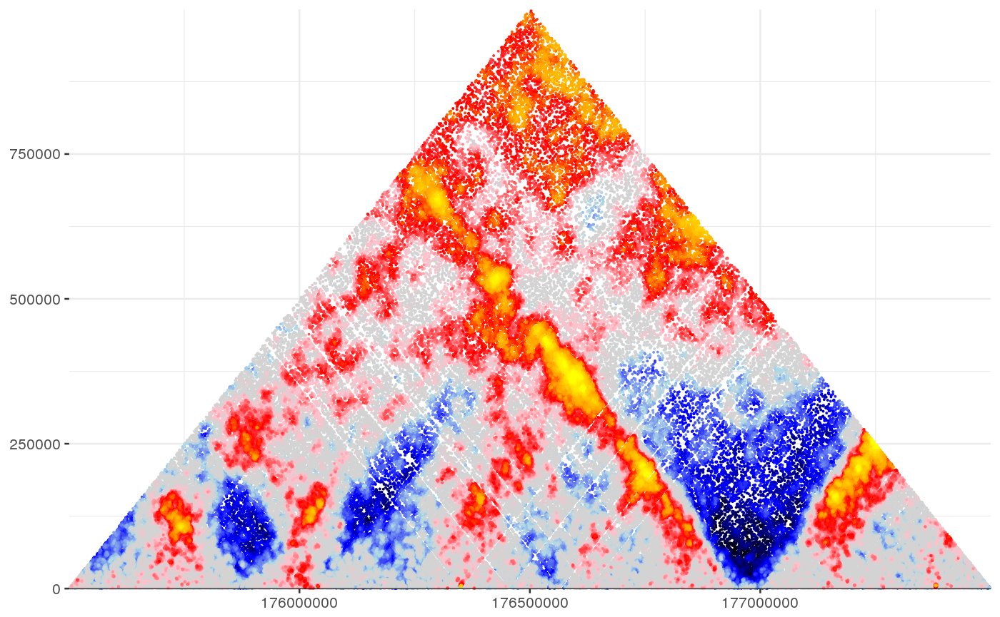

shaman_score_hic_mat
shaman_score_hic_mat(obs_track_nms, exp_track_nms, focus_interval, regional_interval, points_track_nms = obs_track_nms, min_dist = 1024, k = 100, k_exp = 2 * k)
| obs_track_nms | Names of observed 2D genomic tracks for the hic data. Pooling of multiple observed tracks is supported. |
|---|---|
| exp_track_nms | Names of expected (shuffled) 2D genomic tracks. Pooling of multiple expected tracks is supported. |
| focus_interval | 2D interval on which to compute the scores. |
| regional_interval | An expansion of the focus interval, inclusing points outside the focus matrix for accurate computing of the score. Note that for each observed point, its k-nearest neighbors must be included in the expanded matrix. |
| points_track_nms | Names of 2D genomic tracks that contain points on which to compute normalized score. Pooling points from multiple tracks is supported. |
| min_dist | The minimum distance between points. |
| k | The number of neighbor distances used for the score. For higher resolution maps, increase k. For lower resolution maps, decrease k. |
| k_exp | The number of neighbor distances used for the score on the expected tracks. Note, that when comparing expected generated by shuffling the observed, k_exp should be 2*k as the number of contacts in the expected track will always be twice the observed. However, if comparing between two datasets that are independent, k_exp should be set to NA and the will be determined by the ratio between the total number of contacts in this region. |
NULL if insufficient observed data, otherwise resturns a list containing 3 elements: 1) points - start1, start2 and score for all observed points. 2) obs - the observed points. 3) exp - the expected points.
This function extracts observed data and expected data in an expanded matrix and computes The score for a point is the KS D-statistic of the distances to the points k-nearest-neighbors
#Set misha db to test gsetroot(shaman_get_test_track_db()) mat_score = shaman_score_hic_mat(obs_track_nms="hic_obs", exp_track_nms="hic_exp", focus_interval=gintervals.2d(2, 175.5e06, 177.5e06, 2, 175.5e06, 177.5e06), regional_interval=gintervals.2d(2, 175e06, 178e06, 2, 175e06, 178e06))#>#>#>#>#>